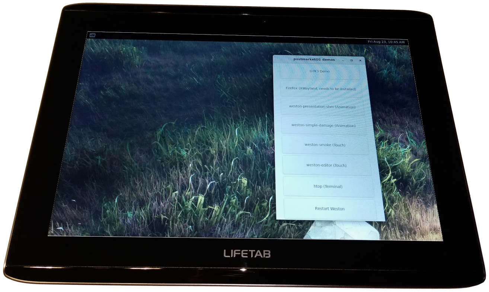

Medion Lifetab S9714 (medion-kai)
Jump to navigation
Jump to search
|
 Lifetab S9714 | |
| Manufacturer | Medion |
|---|---|
| Name | Lifetab S9714 |
| Codename | medion-kai |
| Released | 2012 |
| Category | testing |
| Original software | Android 4.0 / 4.1 |
| Hardware | |
| Chipset | Nvidia Tegra 3 (T30L) |
| CPU | Quad-Core 1.2 GHz |
| GPU | Ultra Low Power GeForce |
| Display | 1280 x 800 touchscreen |
| Storage | 32 GB internal storage |
| Memory | 1 GB |
| Architecture | armv7 |
{kind=link}
| USB Networking |
Works
|
|---|---|
| Flashing |
Works
|
| Touchscreen |
Works
|
| Display |
Works
|
| WiFi |
Works
|
| FDE |
Works
|
| Mainline | |
| Battery | |
| 3D Acceleration | |
| Audio | |
| Bluetooth | |
| Camera | |
| GPS | |
| Mobile data | |
| SMS | |
| Calls | |
| USB OTG / USB-C Role switching | |
| NFC | |
| Accelerometer | |
|---|---|
| Magnetometer | |
| Ambient Light | |
| Proximity | |
| Hall Effect | |
| Barometer | |
| Power Sensor | |
| Camera Flash | |
|---|---|
| Keyboard | |
| Touchpad | |
| USB-A | |
| HDMI/DP | |
| Ir TX | |
| Ir RX | |
| Stylus | |
| Haptics | |
| Ethernet | |
| FOSS bootloader | |
|
This device is based on the Tegra 3. See the SoC page for common tips, guides and troubleshooting steps |
How to enter flash mode
To start fastboot mode: When tablet is running Android (with usb debugging enabled in the developer options) or recovery run
adb reboot bootloader
To unlock bootloader in fastboot mode (CAUTION: this will erase userdata! Backup before doing this!):
fastboot oem unlock
To boot into recovery: hold volume down and power on at the same time to start device.
Installation
My procedure was:
- Backup all important user data
- Unlock bootloader (see above)
- Install CWM recovery by going into fastboot mode and then running
fastboot flash recovery A2109_CWMrecovery-6.0.1.9d.img - Backup Android installation on SD card
- Follow installation guide (note that flashing rootfs can take a few minutes without feedback, just wait)
- After flashing has finished, the screen should show the Medion logo and a notice saying "Cold booting linux"; after that, the postmarkedOS logo and then the demo should come up.
Notes
Apparently, the device was manufactured by Lenovo for vendor Medion and is similar to Lenovo's A2110 / A2109 boards. Some information about the IdeaTab A2109.
How bonsaiblue made wifi work
How bonsaiblue made wifi work (minus the confusing detours). Inspired by the very helpful How_drebrez_made_wifi_work.
- Find information online about the wifi chip of the device: it uses Broadcom BCM4330 for wifi 11b/g/n and Bluetooth 3.0
- Read the WiFi page, in particular the part about Broadcom WiFi.
- Since that page mentions kernel config parameters, grep for "BCM" in the devices kernel config:
grep -i "BCM" pmaports/device/linux-medion-kai/config-medion-kai.armv7 ... CONFIG_BCMDHD_FXN_FW_PATH="/system/vendor/firmware/bcm4330/fw_bcmdhd.bin" CONFIG_BCMDHD_FXN_NVRAM_PATH="/system/etc/nvram_4330.txt" CONFIG_BCMDHD_FXN_195_89=m ...
- So the wifi chip needs a kernel module (
CONFIG_BCMDHD_FXN_195_89=m) and firmware and config files (fw_bcmdhd.bin,nvram_4330.txt). - Download and unpack the vendor's OTA ROM zip (link in the Medion_Lifetab_S9714_(medion-kai)#See_also section). (Other ideas on how to find firmware files are on the How_to_find_device-specific_information#Firmware_files page.)
- In the unpacked ROM folder, look for
system/vendor/firmware/bcm4330/fw_bcmdhd.binandsystem/etc/nvram_4330.txt. - First step is to try to get wifi to work with the vendor firmware. Later on we might be able to use existing postmarket firmware packages instead.
- Copy
nvram_4330.txttoaports/device/device-medion-kai. - Edit
device/linux-medion-kai/APKBUILDto get kernel modules built and installed:- Increase
pkgrelby one. - At the end of the
build()section, add this to build the modules:
- Increase
# the 'no-pic' flag is necessary to avoid the
# error 'Unknown symbol _GLOBAL_OFFSET_TABLE_ (err 0)' when loading the module
make ARCH="$_carch" CC="${CC:-gcc}" CFLAGS_MODULE="-fno-pic" \
KBUILD_BUILD_VERSION="$((pkgrel + 1))-postmarketOS" modules
- At the end of the
package()section, add this to install the modules:
- At the end of the
# Modules
cd "$builddir"
unset LDFLAGS
make ARCH="$_carch" CC="${CC:-gcc}" \
KBUILD_BUILD_VERSION="$((pkgrel + 1))-postmarketOS" \
INSTALL_MOD_PATH="$pkgdir" INSTALL_MOD_STRIP=1 \
modules_install
- Edit
device/linux-medion-kai/config-medion-kai.armv7and set the path where the wifi firmware is expected to a subfolder of/lib/firmware/postmarketos:
CONFIG_BCMDHD_FXN_FW_PATH="/lib/firmware/postmarketos/bcmdhd/bcm4330/fw_bcm4330_bg.bin" CONFIG_BCMDHD_FXN_NVRAM_PATH="/lib/firmware/postmarketos/bcmdhd/bcm4330/nvram_4330.txt"
- Rebuild
linux-medion-kaiand create an image file:
pmbootstrap checksum linux-medion-kai && \ pmbootstrap kconfig check -f && \ pmbootstrap build linux-medion-kai --force && \ pmbootstrap install
- Chroot into the image file and check if modules have been built:
pmbootstrap chroot -r find /lib/modules/
- In particular there should be
/lib/modules/3.1.10/kernel/drivers/net/wireless/bcmdhd_fxn_195_89/bcmdhd.ko. Leave chroot again (withexit).
- In
device/device-medion-kai, add a new filemodules-load.confand have the module found in the previous step loaded at boot time:
# This file contains the names of kernel modules that should be loaded # at boot time, one per line. Lines beginning with "#" are ignored. # wifi module bcmdhd
- Edit
device/device-medion-kai/APKBUILD- Increase
pkgrelby one. - Add to source files and declare a new subpackage:
- Increase
subpackages="$pkgname-nonfree-firmware:nonfree_firmware"
source="deviceinfo
nvram_4330.txt
modules-load.conf"
- At the end of the
package()section, add this to putmodules-load.confin the right place on the device:
- At the end of the
install -Dm644 "$srcdir"/modules-load.conf \
"$pkgdir"/etc/modules-load.d/00-$pkgname.conf
- Below the
package()section, add a newnonfree_firmware()section that installs thenvram_4330.txtfile from the vendor ROM.
- Below the
nonfree_firmware() {
pkgdesc="Wifi firmware"
mkdir "$subpkgdir"
install -D -m644 "$srcdir"/nvram_4330.txt \
"$subpkgdir"/lib/firmware/postmarketos/bcmdhd/bcm4330/nvram_4330.txt
}
- Rebuild
device-medion-kaiand recreate the image file:
pmbootstrap checksum device-medion-kai && \ pmbootstrap build device-medion-kai --force && \ pmbootstrap install
- Flash image to device
pmbootstrap flasher flash_rootfs && pmbootstrap flasher flash_kernel
- ssh into the device via USB_Network
- Use scp to copy the firmware bin
fw_bcmdhd.binonto the device (e.g. into the /tmp directory) and move it to the path given inCONFIG_BCMDHD_FXN_FW_PATH:/lib/firmware/postmarketos/bcmdhd/bcm4330/fw_bcm4330_bg.bin, next tonvram_4330.txt, which should already be in that directory. - Restart the device
- Log in with ssh over USB again and run lsmod to see if the kernel module has been loaded correctly:
lsmod Module Size Used by bcmdhd 387306 0 cfg80211 157302 1 bcmdhd
- If the module isn't listed, check that it's on the device (
find /lib/modules/ -iname "*bcm*ko") and what happens if you try to insert it manually (modprobe bcmdhd || dmesg | tail -n 20). If modprobe doesn't find the module you can also tryinsmod /lib/modules/3.1.10/kernel/drivers/net/wireless/bcmdhd_fxn_195_89/bcmdhd.ko || dmesg | tail -n 20.
If dmesg givesUnknown symbol _GLOBAL_OFFSET_TABLE_you may be missing the-fno-picflag when building the kernel modules.
- Once the module is loaded correctly, continue with the steps on the Wifi page:
- Check if the interface is available
ip link
...
7: wlan0: <BROADCAST,MULTICAST,UP,LOWER_UP> mtu 1500 qdisc pfifo_fast state UP qlen 1000
link/ether 00:11:22:33:44:55 brd ff:ff:ff:ff:ff:ff
- Turn on wifi
nmcli radio wifi on
- Scan for available wifis:
nmcli device wifi list ifname wlan0
- Connect to your wifi:
nmcli device wifi connect "$SSID" password "$PASSWORD" ifname wlan0
- If wifi works, try replacing the vendor's firmware bin with bins from existing postmarket firmware packages. Information about the Broadcom firmware version is added in ASCII at the end of the blobs and can be seen with
less:
less fw_bcmdhd.bin ... 4330b2-roml/sdio-g-pool-pno-pktfilter-keepalive-wapi-wme-p2p-apsta-aoe Version: 5.90.195.89 CRC: 2303bcd6 Date: Sun 2012-07-22 19:27:22 PDT ...
- Candidate postmarket packages can be identified with
grep -ril "bcm" pmaports/firmware. Packagefirmware-aosp-broadcom-wlansounds promising.
- The blobs for
firmware-aosp-broadcom-wlanare taken from this GitHub repository. - Checking blob
bcm4330/fw_bcm4330_bg.binfrom that repository with less shows that it's a newer version:
less fw_bcm4330_bg.bin ... 4330b2-roml/sdio-g-p2p-idsup-idauth-pno Version: 5.90.195.114 CRC: 24b8f965 Date: Wed 2013-01-23 17:48:37 PST ...
- Copying
fw_bcm4330_bg.binonto the device at/lib/firmware/postmarketos/bcmdhd/bcm4330/fw_bcm4330_bg.binand rebooting shows, that this firmware also works (with the vendornvram_4330.txtfile unchanged).
- This means we can add
firmware-aosp-broadcom-wlanas a dependency in the firmware part ofdevice/device-medion-kai/APKBUILD:
nonfree_firmware() {
pkgdesc="Wifi firmware"
depends="firmware-aosp-broadcom-wlan"
mkdir "$subpkgdir"
install -D -m644 "$srcdir"/nvram_4330.txt \
"$subpkgdir"/lib/firmware/postmarketos/bcmdhd/bcm4330/nvram_4330.txt
}
Result: Merge request for wifi on medion kai
Contributors
Maintainer(s)
Users owning this device
Related links
See also
- Google Nexus 7 2012 (asus-grouper)
- Device package
- Kernel package
- Vendor Android kernel sources in a GitHub repository
- CWM recovery is available here
- Direct link for CWM for Jelly Bean / Android 4.1
- Direct link for CWM for Ice Cream Sandwich / Android 4.0
- SuperSU-v2.46
- kernel sources for Lenovo Kai?